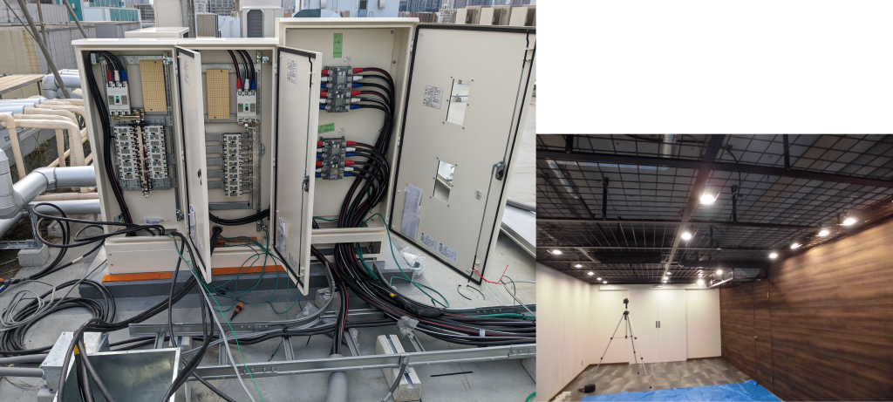
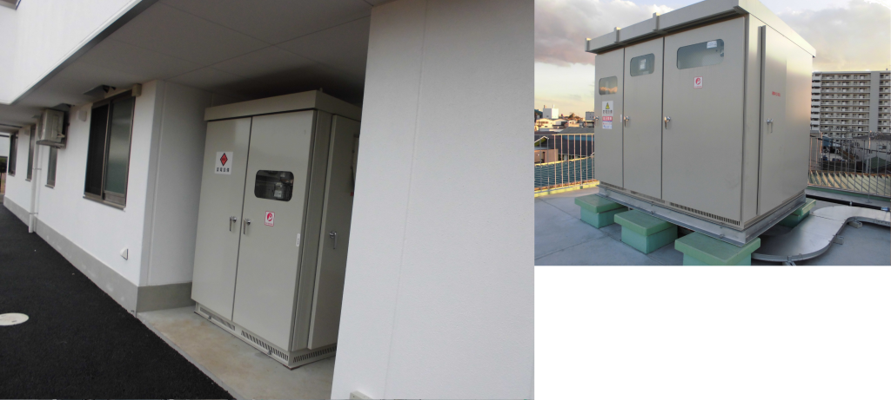
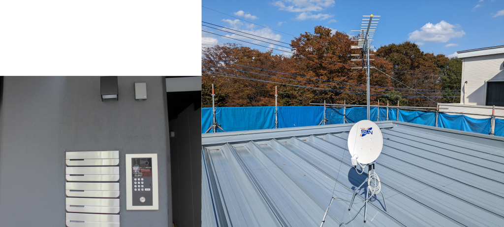
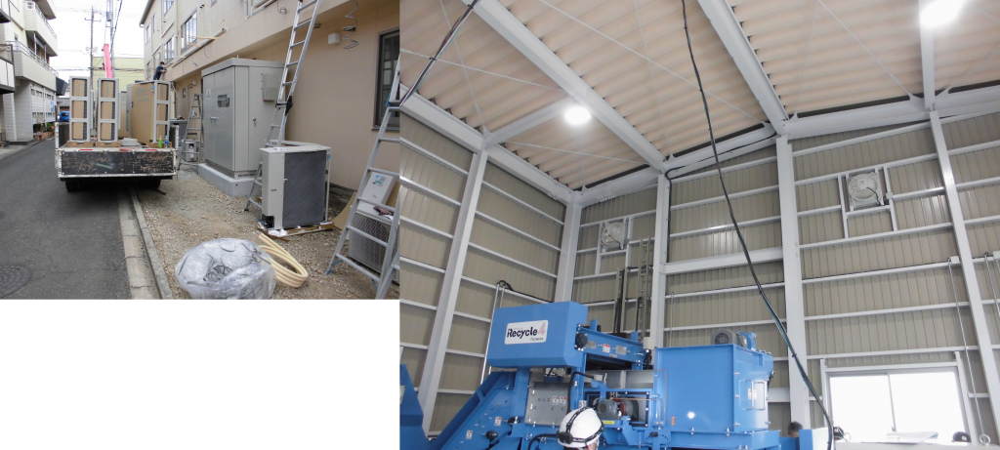
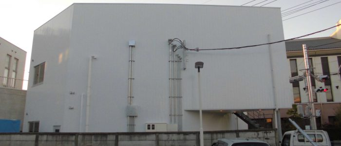
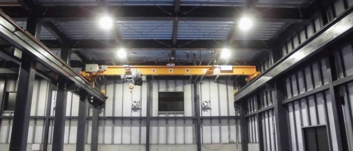
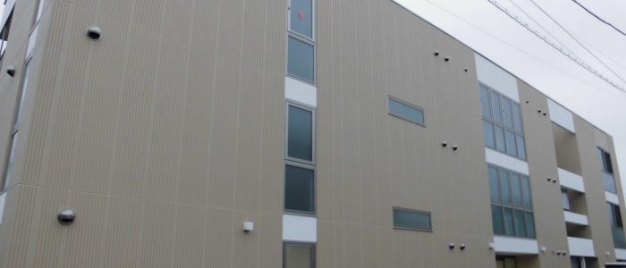
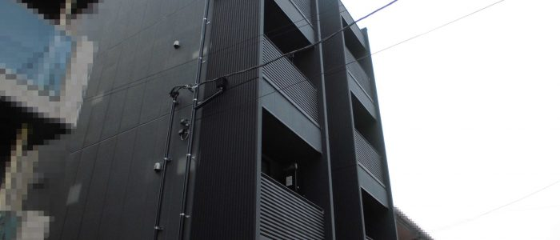
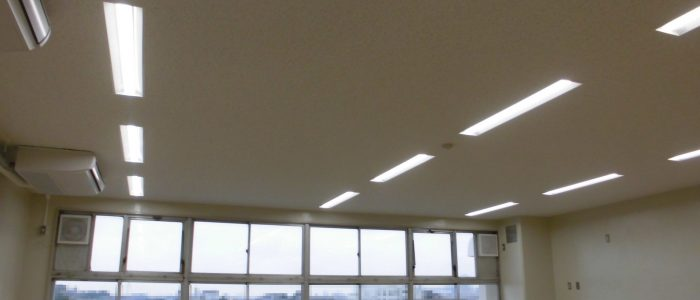
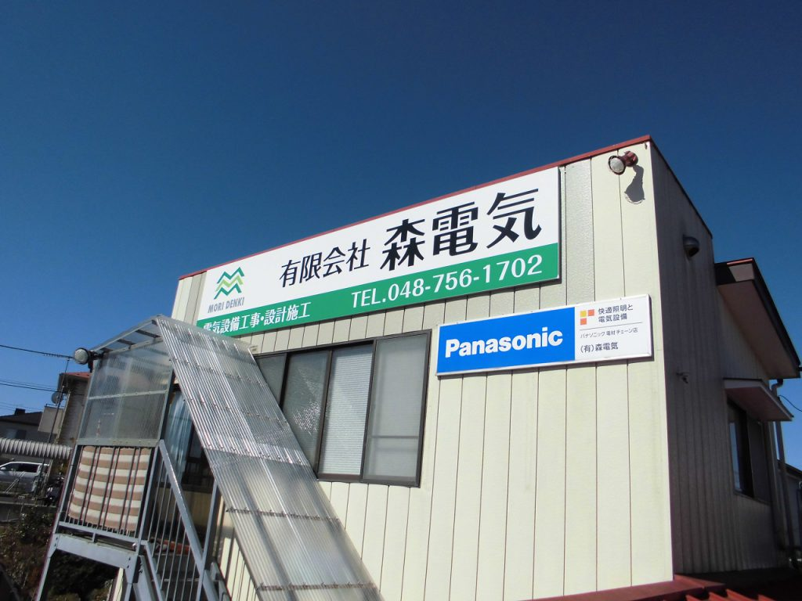

01
一般用電気設備工事
住宅、店舗、事務所などの照明、コンセント、分電盤、動力設備の設計・施工。
ABOUT MORI DENKI
戦後間もない昭和30年代に、埼玉県岩槻市の地元電気工事店としてスタート。 その後、前身となる森電気工事店を昭和38年4月に設立し、平成10年3月10日に有限会社森電気として創立しました。
商業施設、工場、医療・教育施設、集合住宅、木造住宅、公共工事案件など、幅広い建物の電気設備工事に携わってきました。
SERVICE
住宅、店舗、事務所、工場、医療・教育施設など、建物の用途に合わせて必要な工事を組み立てます。

住宅、店舗、事務所などの照明、コンセント、分電盤、動力設備の設計・施工。

施設・工場などで利用される高圧受変電設備、キュービクル、高圧ケーブルの工事。

LAN配線、テレビ共聴、インターホン、一般放送、防犯カメラなどの設備工事。

エアコン、換気扇、全熱交換器など。電源工事と合わせた対応が可能です。
古くなった蛍光灯や共用部照明をLED化し、使いやすさと維持管理を見直します。
電気自動車用コンセントなど、これからの設備ニーズにも対応します。
WHY CHOOSE US
新しいものへの勉強・挑戦を大切にしながら、お客様の求める設備を実現する。 地域の方にも法人担当者にも、安心して任せられる施工を目指します。
岩槻の地元電気工事店として始まり、民間施設から公共工事案件まで幅広く対応。
電気工事を設計から施工、管理までワンストップで進められる体制。
第一種・第二種電気工事士、2級電気工事施工管理技士、建設業許可に基づいて対応。
LED、EV電源、空調・換気、弱電設備など、建物に必要な設備をまとめて相談できます。
照明、空調、盤、電器設備など、複数メーカーの機器を扱います。
TARGET
WORKS
オフィス・店舗、工場・倉庫、教育・医療、住宅・マンション、公共施設など、建物用途ごとの施工実績を確認できます。

商業施設、飲食店舗、事務所、テナントビルなど。

工場、倉庫、高圧設備、電力設備など。

専門学校、幼稚園、クリニック、福祉施設など。

住宅、アパート、マンション共用部のLED化など。

学校、商業施設広場、消防分団倉庫など。
LICENSE
MAKER

COMPANY
RECRUIT
電気工事士として、商業ビル、店舗、事務所、工場、集合住宅、木造住宅などの現場に携わる仕事です。
CONTACT
設備の新設・改修、LED化、EV電源、空調・換気、弱電設備など、建物の状況に合わせて内容を確認します。